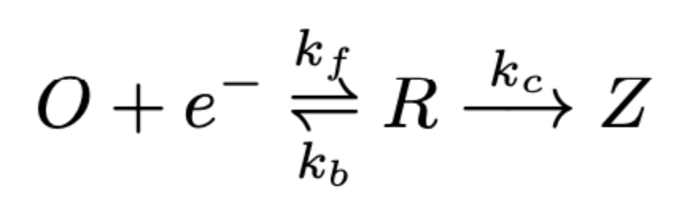
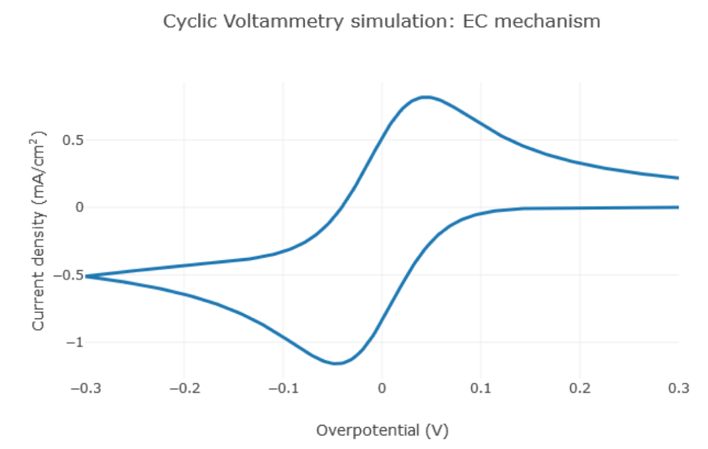
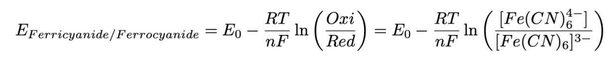

The kinetic model chosen was utilized by NAWI Graz’s 2019 iGEM project targeting AFB. The team’s cyclic voltammetry simulation will potentially aid our work of the wet lab as we are similarly planning to use electrochemical impedance spectroscopy (EIS) for our detection method.
Cyclic voltammetry (CV) is a well-known electrochemical technique commonly used to explore the reduction and oxidation processes of molecular species. This method is also integral in studying the electron transfer-initiated chemical reactions, including catalysis. CV will aid in the work of our own project as it is used to evaluate the parameters for EIS measurement, in addition to perturbation potential and bias potential to obtain ideal conditions. The model was simulated using MATLAB by the team.
To obtain the data and the constants required for the model, we can initially build upon available literature values, including the parameters used by the NAWI Graz’s 2019 team for the CV simulation to detect AFB. Once the parameters and conditions for our experiment are specified, we can alter the data and constants inputted into the model for our specific project. The parameters utilized for the team’s simulation is given below:

The CV simulation combines an electrochemical reduction with a subsequent chemical reaction of the reduced species using the relationship below:

The simulation was used to model three mechanistic processes for the NAWI Graz’s team: electrochemical reaction (charge transfer), chemical reaction, and diffusion.

The x-axis is reflective of the imposed parameter, with the y-axis being reflective of the response.
The experimentally determined average potential between two current peaks is used to estimate the formal potential. The peaks are reflective of the equilibrium of the electrochemical reaction, described by the Nernst equation. This method will be useful for our project as it is a very effective tool to use in predicting the system’s response to change of concentration. The Nernst equation relates the potential of an electrochemical cell to the standard potential of species and activities of the oxidized and reduced analyte in the system at equilibrium:

Model Summary. NAWI Graz Austria 2019 iGEM. (n.d.). Retrieved April 12, 2022, from https://2019.igem.org/Team:NAWI_Graz/Model